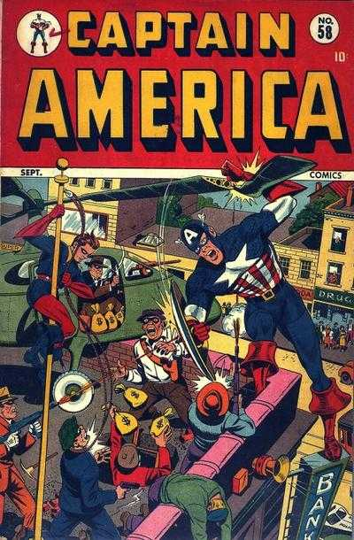
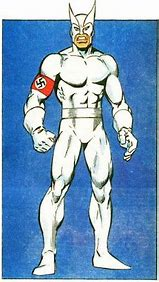

Steve Grant Rogers... The original and most well known Captain America that there has ever been! He first came to the page in December 1940. December 1940 was the actual release date, however the cover date on the comic says March 1941. Now every M.C.U fan knows the origin story told in the movies, however the origin story in the comics is slightly different from the one portrayed in the movies.
Steve Rogers, the First Avenger, was born on July 4th 1922 and grew up in New York City, New York. He applied to be enrolled by the United States Army early into world war 2, however he was rejected because they thought he was too frail, too skinny, basically anemic. He tried to beg them to change their minds but couldn't do so. But as luck would have it, there was an army general called General Phillips who overheard Rogers' begging to be enrolled, so the General approached Steve to offer him the oppertunity to take part in a performance-enhancing experiment which was codenamed Operation Rebirth, located in Washington D.C to which Steve agreed to.
He was introduced to Dr Abraham Erskine, who was the creator of the Super-Soldier Serum. Steve then went through weeks and weeks of tests to see if his body would be able to handle the Serum without any complications and luckily for him, the tests were all good and he was finally given the Serum, both orally and intravenously. Once it was administered, he was asked to enter a chamber and exposed to a massive amount of vita-rays. Vita-rays were a combination of an exotic amount (in 1940) of radiation wavelengths, which were designed to speed up the effects of the serum on his body. He emerged from the chamber with the perfect human body. Once he emerged, an undercover Nazi spy who had watched the experiment to see if it was successful or if it would benefit the Nazi's in the war, proceeded to murder the Dr.The Dr never fully wrote down the formula for the serum, meaning that when he died, it left Steve as the only person who benefited from his work.
During the war, Cap was seen as a symbol of hope and freedom, but he was also the best special ops agent, always with his best friend Bucky at his side. But in 1945, Cap and Bucky were attempting to intercept a plane, launched by Baron Zemo, that was loaded with bombs. The plane exploded with them both on board and the world presumed them both dead. However the explosion threw Cap straight into the icy Arctic waters of the English Channel, and the Super-Soldier formula prevented Steves body fluid from solidifying and killing him, which meant the cold temperature of the water put his body in a state of "Suspended Animation". In the comics, Suspended Animation slows down the processes of life without it killing them. (This was retconned in 1977 to correct a problem that people had wondering how Cap and Bucky were still around and active after they disappeared)
William Naslund moved to Britain in 1942, he was recruited by a seemingly normal team of British Superheroes who called themselves "The Crusaders" and Naslund was given the name "Spirit of '76". However it was not a normal team, it was actually organized and created by an undercover German agent named Alfie. He created The Crusaders to try and ruin the reputation of the superhuman team "The Invaders". Once the team found out Alfie's plans and who he was, The Crusaders disbanded, however the Spirit of '76 remained an active hero.
The Spirit of '76 actually worked with Rogers on a mission in Berlin, Germany to try and retrieve Nazi secrets, and their mission ended, with Cap's most well known enemy Red Skull, appearing to die by being crushed underneath a fallen building. When Cap and Bucky seemingly died in 1945, United States' President Truman approcahed and selected the Spirit of '76 to take over the mantle of Captain America to try and hide the fact that the original Cap was now dead.
Unfortunately, William Naslund only held the mantle for a further 9 issues, where he was mortally injured in the grip of a robot minion that belonged to the android villian Adam 2, and later died of his injuries.
Jeffrey Mace was the 3rd Captain America. He was born and raised in Brooklyn, New York and was an employee at The Daily Bugle newspaper company. Throughout the 2nd World War, he felt inspired by all of the heroics of Captain America, and he became a Superhero himself going by the name of "The Patriot".
The Patriot created and proceeds to lead an American based superhero group who were known as "The Liberty Legion" during World War 2. Following the death of Naslund, the 2nd Captain America, The Patriot takes on the mantle and continues the legacy and he was Captain America for 3 years.
When Naslund's version of Bucky (Fred Davis) was shot by a perfume smuggler and forced to retire, a hero called "Golden Girl" then becomes his new sidekick. Golden Girl was an FBI Liason Called Betty Ross. When Betty gets relocated without Mace knowing where she was relocated to, he manages to find out where she now was by using some leverage that he had over another FBI Liason called "Skinner", after finding out the conspiricy he had planned to carry out, and he then retired from the Captain America Role to go and spend his life with Betty until his death from cancer.
William Burnside was the 4th Captain America in Marvel Comics. He completely idolised Captain America, and when he learned about the apparent death of Rogers in 1945, he realised that, even with President Truman hiring William Naslund to replace Steve Rogers, his gut feeling was correct all along.
A few months after Jeffrey Mace retired from the role of Cap in the early 1950's, Burnside graduated college with a ph.D in American History after doing all of the research on the life of Captain America. In 1953, he flew to Germany to examine the files of a Nazi espionage officer in the Secret Service, and came across the original formula for the Super-Soldier Serum. He then returned to the U.S to meet with high officials of the American Government and revealed his discovery of the Serum formula. He made a deal with the FBI where they could have access to the formula, and in return, he would become the new Captain America and act as a symbol during the Korean War.
Burnside proceeded to change his name legally to "Steven Rogers" and went through a lot of plastic surgery and vocal chord reconstruction to alter his appearance and voice to match it up to the original Steve Rogers, but by the time he had become a physical duplicate to the original Steve, the Korean conflict ended meaning that a patriotic symbol was not needed anymore and the FBI cancelled the prior agreement for "Steven" to be the new Cap. They didn't leave him high and dry though, they helped him become an established teacher at the elite prep. school "Lehigh" in Connecticut.
While teaching at LeHigh, he met a teenage boy "Jack Monroe" who also worshipped Captain America, and the 2 developed a close friendship. In the end, "Steven" told Monroe about his past, including the deal with the FBI, which led to them both to suit up and become the 1950's Captain America and Bucky. In 1953, Cap's more sworn enemy Red Skull re-emerged and seized the United Nations and held the delegates hostage, which made "Steven" and Monroe decide to act and attack Red Skull under the impression that they would be able to psychologically unbalance Red Skull (Just at the sight of Captain America) and defeat him. Monroe and Steven both injected themselves with a recreated version of the Super-Soldier Serum and attacked the Red Skull. Their plan of psychologically unbalancing Red Skull to defeat him worked. The sight of Cap really unnerved Red Skull, meaning "Steven" and Monroe we able to save the U.N delegates. It was revealed down the line that this Red Skull in particular was not the original German World War 2 mastermind, but he was in fact a communist spy. The FBI then allowed "Steven" to continue as Captain America.
"Steven" and Monroe eventually decended and were asked to undergo treatement by government officials in late 1955, but were unable to convince them, so "Steven" and Monroe were captured and placed into suspended animation at a Southern government facility. Scientists were not able to treat their madness and they were forgotten by the U.S government, until a government employee who was not happy with U.S policies who proceeded to release the duo (Still insane) into the world. "Steven" saw a Captain America in this modern world, so he pretended to be the real Captain America, infiltrated the Avengers and was then able to steal a Quinjet, capture the real Captain America and his associates "Falcon" and "Sharon Carter". He found out that the Cap he captured was actually the oiginal Cap and it made him suffer a nervous breakdown and was returned to suspended animation again.
The government later sent "Steven" and Monroe to a mental institution, which was secretly managed by Cap's enemy Dr Faustus. Faustus developed a mind-control gas and aimed to control New York via a fascist group known as "The National Force". The Dr tested the gas on "Steven" and he established "Steven" as the Grand Director of the National Force. 
Namor the Sub-Mariner, a former teammate of Captain America in the group "The Invaders", found a frozen figure in a block of ice near the North Atantic, and was extremely angry when he found out that there was a tribe that were worshiping an inanimate object, picked up the block and launched it into the sea. The ice began breaking apart and revealed a frozen figure of a man inside. The Avengers spotted this man floating in the water and decided to pull him on board of their aircraft, and quickly notice the iconic Captain America uniform helping them identify the man. When he came back to conciousness, he accepted the Avengers' offer to join their group.
While Cap was trying to adapt to the modern world, he tried to find old friends and allies to become reaquainted with them, Nick Fury was one of these people. Cap and Fury met and served during World War 2 when Fury was a sergeant. When they reunited, Cap found out that these days, Fury was now the leader of the intelligence agency S.H.I.E.L.D. When there were moments and situations that were beyond the capabilities of Fury's agents, he would always call Cap to complete these missions on their behalf. Cap then later met Sam Wilson, who was an African-American social worker from Harlem and Cap would then train Sam up to become "Falcon", and in the process would now be Cap's new partner. However, further down the line, Rogers decided to resign from being Captain America when the U.S government tried to force him to ONLY work for them, and his resignation meant he was forced to relinquish his shield and costume.
John Walker was the man who the U.S government chose to be the next Captain America. He donned the iconic costume and shield that Rogers was forced to give up, but he was more misguided that Rogers, and he certainly never showed much restraint when fighting any enemies. However when his Parents were murdered by a group of terrorists that he had previously put in prison, this was the moment that made him go over the edge into a dark place of brutality and no compassion. Eventually after meeting Rogers, Walker gave up the Captain America mantle and started to work for the government as the hero "U.S.Agent", which then allowed Steve Rogers to reclaim his costume, shield and mantle.